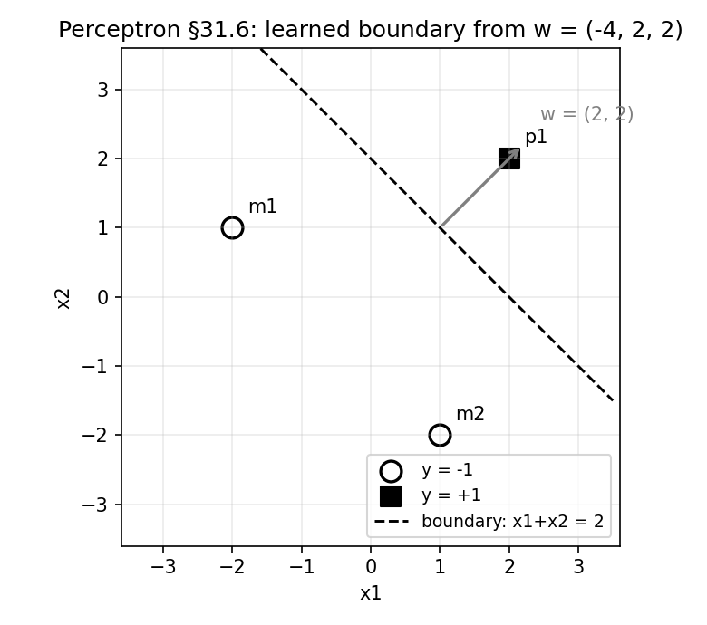
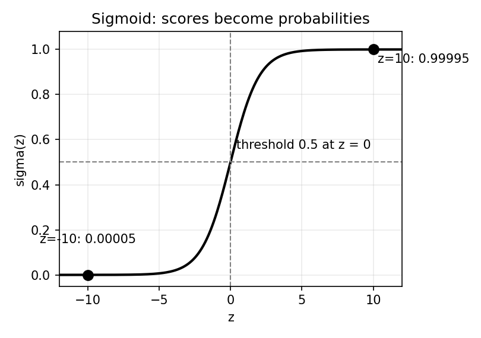

31. Perceptron and logistic regression
Two linear classifiers, two opposite temperaments. The perceptron learns by making mistakes: it guesses, gets corrected, and nudges its weights only when it is wrong. Logistic regression never guesses at all — it models the probability \(P(y \mid x)\) directly and tunes its weights to make the observed labels as probable as possible. Both draw the same shape in the end — the linear boundary \(w^T x + b = 0\) (§22.9, §30.5) — but they arrive by completely different roads.
This is the chapter §30 promised. Naive Bayes was the intro slide’s “generative counterpart of logistic regression” — the model that reaches the linear boundary via the \(P(x \mid y)P(y)\) detour. Logistic regression is the discriminative half of that pair: it skips the detour and learns \(P(y \mid x)\) straight from the data. The perceptron comes first because it is the older, simpler machine (Rosenblatt, 1958) and the direct ancestor of the neural networks in Part VI.
Notation. Two label conventions appear because the two algorithms come from two sources: the perceptron slides use \(y^{(i)} \in \{-1, +1\}\); logistic regression (the 6.036 notes in the course materials) uses \(y^{(i)} \in \{0, 1\}\), “enabling them to be interpreted as probabilities of being a member of the class of interest”. Translate freely: \(+1 \leftrightarrow 1\), \(-1 \leftrightarrow 0\). The \(i\)-th example is \(x^{(i)}\), its label \(y^{(i)}\), \(D = \{(x^{(i)}, y^{(i)})\}_{i=1}^n\) (§22.9). Note: this parenthesized \(x^{(i)}\) replaces Part III’s \(x^i\) — same meaning; the parens remove the power-collision §22.6 warned about. The \(x^{(i)}\) form is used from here on (Chapters 32–36 and beyond).
Everything in §§31.2–31.6 comes from the MLT Perceptron slides (Dr. Ashish Tendulkar; the shared materials’ “Week 4” folder — actual perceptron content, week numbering notwithstanding) and the Week 9 practice assignment. §§31.7–31.12 come from the MITx 6.036 machine-learning notes kept in the MLT “Notes” folder (the logistic-classification and gradient-descent chapters). The linear-boundary geometry (§31.1) is from the “Models of Classification” slides; the generative-vs-discriminative framing (§31.13) leans on §30.1–30.2’s TA-notes account.
31.2 The perceptron: a neuron that learns from mistakes
Def (perceptron). A binary classification algorithm — the slides stress it “can solve only binary classification problems”, so \(y^{(i)} \in \{-1, +1\}\). Invented in 1958 by Frank Rosenblatt, “intended to be a machine, rather than a program”, and “meant to be a rough model of how individual neurons work in the brain”.
The model (the slides’ form): \[\boxed{\hat y = h_w(x) = f(w^T \phi(x)) = f(z)},\] i) \(\phi(x)\) — a feature transformation of the input (use \(\phi(x) = (1, x)\) to smuggle in the bias, §31.1). ii) \(w^T \phi(x)\) — the linear combination of (transformed) features. iii) \(f\) — a non-linear activation: the sign (threshold) function, \[\boxed{f(z) = \begin{cases} +1, & z \ge 0, \\ -1, & z < 0, \end{cases}}\] i.e. \(\hat y = \operatorname{sign}(w^T \phi(x))\).
So the perceptron is the linear discriminant of §31.1 with its continuous output snapped to \(\pm 1\) by a hard threshold. Its decision boundary is \(w^T \phi(x) = 0\) — the same \(w_0 + w^T x = 0\) shape.
Basically, … “Take the linear score \(w^T x\), then slam it through a sign function: non-negative means class \(+1\), negative means class \(-1\). It is a neuron in the roughest sense — weighted sum in, yes/no out. And it only does two classes, ever.”
31.3 The perceptron loss: pay only for mistakes
Let \(\hat y^{(i)}\) be the perceptron’s prediction and \(y^{(i)}\) the true label. The slides define the per-example error: \[e^{(i)} = \begin{cases} 0, & \hat y^{(i)} = y^{(i)}, \\ -w^T \phi(x^{(i)})\, y^{(i)}, & \text{otherwise}, \end{cases}\] compactly, \[\boxed{e^{(i)} = \max\!\left(0, -w^T \phi(x^{(i)})\, y^{(i)}\right) = \max\!\left(0, -\hat y^{(i)} y^{(i)}\right)}.\]
Why this shape: if the prediction is correct, \(\hat y^{(i)} y^{(i)} = +1\) and the error is \(\max(0, -1) = 0\). If wrong, \(\hat y^{(i)} y^{(i)} = -1\) and the error is \(\max(0, 1) = 1\) (the slides’ illustration works both cases out to exactly \(0\) and \(1\)). The total loss: \[\boxed{J(w) = \sum_{i=1}^{n} e^{(i)} = \sum_{i=1}^{n} \max\!\left(0, -w^T \phi(x^{(i)})\, y^{(i)}\right)}.\]
Note (the slides’ warning). This error is piecewise linear: zero in the correctly-classified region, a linear function of \(w\) in the misclassified region — and \(J(w)\) is not differentiable in \(w\). So gradient descent (Chapter 10) cannot be applied directly; the perceptron needs its own optimization procedure (§31.4).
Basically, … “Right answer: pay nothing. Wrong answer: pay \(1\) — the bill is all-or-nothing per point. As a function of the weights it has a kink at the boundary — no smooth slope to descend — so the perceptron optimizes by a different trick: fix mistakes one at a time.”
31.4 The perceptron update rule: learn only when wrong
Def (perceptron update rule). Initialize \(w^{(0)} = 0\). For each training example \((x^{(i)}, y^{(i)})\): \[\boxed{\hat y^{(i)} = \operatorname{sign}\!\left(w^T \phi(x^{(i)})\right), \qquad w^{(t+1)} := w^{(t)} + \alpha\,\bigl(y^{(i)} - \hat y^{(i)}\bigr)\,\phi(x^{(i)})},\] \(\alpha\) the learning rate. The three cases (the slides work each one out):
- Correct: \(y^{(i)} = \hat y^{(i)}\) → \((y^{(i)} - \hat y^{(i)}) = 0\) → \(w^{(t+1)} = w^{(t)}\). Nothing happens.
- True \(-1\), predicted \(+1\): \(w^{(t+1)} = w^{(t)} - 2\alpha\,\phi(x^{(i)})\) — push the weights away from this point.
- True \(+1\), predicted \(-1\): \(w^{(t+1)} = w^{(t)} + 2\alpha\,\phi(x^{(i)})\) — pull the weights toward this point.
This is mistake-driven learning in its purest form: correctly classified examples leave no trace on the weights; only mistakes move them. (The slides’ own summary of the loss: “for misclassified example, we can reduce loss by reducing \(w\). And for correctly classified examples, we leave \(w\) unchanged.”)
Basically, … “Guess a label for each point. Right? Move on, change nothing. Wrong? Shove the weights toward the point if it should have been \(+1\), away if it should have been \(-1\). The algorithm has no memory of its successes — only its mistakes teach it.”
31.5 Convergence: guaranteed on separable data, hopeless otherwise
The slides state the convergence behaviour with unusual bluntness:
- Linearly separable data → convergence. “Linear separable examples lead to convergence of the algorithm with zero training loss” — the update loop eventually finds weights that classify every training point correctly and then stops (correct points cause no updates).
- Non-separable data → oscillation, forever. “Else it oscillates.” The Week 9 practice assignment makes this concrete (Q2): on three points no line can separate, the perceptron cycles through the same weight vectors “and will never converge”.
The mistake bound (practice assignment, Q3–Q4). On separable data the slides’ guarantee can be quantified. Let \(R\) be the maximum length of the data points and \(\gamma\) the margin — the smallest value of \(y^{(i)}(u^T x^{(i)})\) over the data, for a unit-norm separator \(u\). Then the perceptron makes only finitely many mistakes — at most \[\boxed{\text{\#mistakes} \le \left(\frac{R}{\gamma}\right)^2}.\] The assignment’s numbers: \(R = 4\), \(\gamma = 1\) → at most \((4/1)^2 = 16\) mistakes (answer: 16). And a single update can grow the squared weight length by at most \(R^2\): with \(\lVert w \rVert^2 = 36\) and \(R = 4\), the next iteration’s squared length is at most \(36 + 16 = 52\) — so \(45\) is a valid value, \(55\) is not (Q3’s answer).
Note (scope of the claim). The sources give the statement — separable implies convergence with zero training loss, plus the \((R/\gamma)^2\) bound as the assignment uses it — not a full proof. Nothing here promises anything about test data (§22.10’s warning stands) or about which separator is found when many exist.
Basically, … “If a straight wall can separate the classes, the perceptron will find one — after at most \((R/\gamma)^2\) mistakes, and then it stops dead, training loss zero. If no such wall exists, it never stops: it just keeps shuffling the same weights around forever. Check separability first (practice Q1/Q8 are exactly this skill).”
31.6 Worked example: three points, two updates (every number recomputed)
Data (augmented \(\phi(x) = (1, x_1, x_2)\), bias folded in; labels in \(\{-1, +1\}\)):
| example | \(\phi(x^{(i)})\) | \(y^{(i)}\) |
|---|---|---|
| \(m_1\) | \((1, -2, 1)\) | \(-1\) |
| \(m_2\) | \((1, 1, -2)\) | \(-1\) |
| \(p_1\) | \((1, 2, 2)\) | \(+1\) |
(Separable: \(x_1 + x_2 = 0\) already separates them, but the perceptron must discover a wall on its own.) \(\alpha = 1\), \(w^{(0)} = (0,0,0)\). Cycle \(m_1, m_2, p_1\) repeatedly. Recall \(f(z) = +1\) for \(z \ge 0\) — so a zero score predicts \(+1\).
Sweep 1. - \(m_1\): \(z = 0 \to \hat y = +1 \ne -1\). Mistake (case ii): \(w := (0,0,0) + 1\cdot(-1-1)\cdot(1,-2,1) = -2(1,-2,1) = \boxed{(-2,\, 4,\, -2)}\). - \(m_2\): \(z = (-2)(1) + 4(1) + (-2)(-2) = -2 + 4 + 4 = 6 \ge 0 \to \hat y = +1 \ne -1\). Mistake: \(w := (-2,4,-2) + (-2)(1,1,-2) = \boxed{(-4,\, 2,\, 2)}\). - \(p_1\): \(z = (-4)(1) + 2(2) + 2(2) = -4 + 4 + 4 = 4 \ge 0 \to \hat y = +1 = y\). Correct — no change.
Sweep 2 (verify; \(w = (-4,2,2)\)). - \(m_1\): \(z = -4(1) + 2(-2) + 2(1) = -4 - 4 + 2 = -6 < 0 \to -1\) ✓. - \(m_2\): \(z = -4(1) + 2(1) + 2(-2) = -4 + 2 - 4 = -6 < 0 \to -1\) ✓. - \(p_1\): \(z = 4 \ge 0 \to +1\) ✓. All correct — no updates fire, training loss is \(0\), the algorithm halts. (Every score above was recomputed in numpy independently — see the review log; an early hand pass scored \(m_1\)’s second-sweep \(z\) as \(-10\), the recompute corrected it to \(-6\).)
The learned boundary. \(-4 + 2x_1 + 2x_2 = 0\), i.e. \(\boxed{x_1 + x_2 = 2}\) — the same \(w_0 + w^T x = 0\) shape from §31.1, with \(w = (2,2)\) fixing the orientation (orthogonal to the line) and \(w_0 = -4\) fixing the location.

Basically, … “Start with zero weights, so everything scores \(0\) and gets called \(+1\). The two \(-1\) points complain: shove the weights by \(-2\) times each offender, landing at \((-4, 2, 2)\). Second pass: every point is now on the right side of the wall \(x_1 + x_2 = 2\), nobody complains, done. Two mistakes, then silence — that is perceptron learning.”
31.7 Why probabilities? The perceptron’s blind spot
A perceptron’s output is categorical: \(+1\) or \(-1\), no in-between. The 6.036 notes list why that hurts:
- No degree of certainty. “The classifier can’t express a degree of certainty about whether a particular input \(x\) should have an associated value \(y\).” A point miles from the boundary and a point grazing it get the same verdict.
- Flat, uninformative loss. Any two hypotheses with the same misclassification count “have the same \(J\) value” — the loss cannot tell a near-miss from a confident error, “which makes it difficult to design an algorithm that searches through the space of hypotheses for a good one”.
The fix: keep the linear score \(z = \theta^T x + \theta_0\), but map it to \((0,1)\) with a smooth squashing function and read the output as a probability. That is logistic regression.
Basically, … “The perceptron only shouts yes or no. Sometimes you want ‘probably yes, 90% sure’ — and a loss that rewards getting more right rather than just counting wrongs. Swap the hard sign for a soft S-curve and the output becomes a probability.”
31.8 Logistic regression: the model
Def (linear logistic classifier). Hypotheses parameterized by a vector \(\theta\) and a scalar \(\theta_0\) (the 6.036 notes’ notation), producing outputs in \((0,1)\): \[\boxed{h(x; \theta, \theta_0) = \sigma(\theta^T x + \theta_0)}, \qquad \boxed{\sigma(z) = \frac{1}{1 + e^{-z}}},\] \(\sigma\) the logistic (sigmoid) function. The output is interpreted as a probability because it always lies in \((0,1)\).
The probabilistic model (labels now in \(\{0,1\}\)): \[\boxed{P(y = 1 \mid x) = \sigma(\theta^T x + \theta_0) = g, \qquad P(y = 0 \mid x) = 1 - g}.\] This is the discriminative move §30.1 described: model \(P(y \mid x)\) directly — “we just need \(P(y \mid x)\) for prediction” — with no \(P(x)\), no class portraits, no Bayes flip.
The boundary is still linear. Predict \(1\) when \(g > 1/2\): since \(\sigma(z) = 1/2 \iff z = 0\), \[\boxed{\sigma(\theta^T x + \theta_0) > \tfrac12 \iff \theta^T x + \theta_0 > 0},\] so the decision boundary \(\sigma = 1/2\) is exactly the line (hyperplane) \(\theta^T x + \theta_0 = 0\) — the 6.036 notes pose this as a study question (“convince yourself that the set of points for which \(\sigma(\theta^T x + \theta_0) = 0.5\) … is a line”). Same shape §30.5 derived for Naive Bayes (\(w^T x + b > 0\)), now learned straight from \(P(y \mid x)\).
Note (the name lies). “Logistic regression” is classification — the “regression” is historical baggage. What it regresses is the log-odds: \(\log \frac{g}{1-g} = \theta^T x + \theta_0\), a linear function of \(x\).
eg (practice-assignment numbers, Q9). Two points with scores \(z = 10\) and \(z = -10\): \(\sigma(10) = 1/(1+e^{-10}) \approx 0.99995\), \(\sigma(-10) \approx 0.00005\) — the first point’s probability “will be much higher than” the second’s (the assignment’s answer). Far along \(+w\), certainty saturates at \(1\); far along \(-w\), at \(0\).

Basically, … “Keep the perceptron’s linear score, but instead of snapping it to \(\pm 1\), run it through an S-curve that squeezes any number into a probability between \(0\) and \(1\). Score \(0\) → fifty-fifty; big positive → nearly certain \(1\); big negative → nearly certain \(0\). The 50/50 line is still a straight wall — \(\theta^T x + \theta_0 = 0\).”
31.9 The loss: cross-entropy is the negative log-likelihood
Training means choosing \(\theta, \theta_0\) to “maximize the probability assigned by the classifier to the correct \(y\) values, as specified in the training set” (6.036). With guess \(g^{(i)} = \sigma(\theta^T x^{(i)} + \theta_0)\) and labels in \(\{0,1\}\), the probability the model assigns to the observed labels (independent examples) is \[\prod_{i=1}^{n} g^{(i)\,y^{(i)}}\bigl(1 - g^{(i)}\bigr)^{1 - y^{(i)}}\] — the Bernoulli likelihood (§15.11’s distribution, now with \(g^{(i)}\) in the \(\mu\) slot). Check the exponent trick: \(y^{(i)} = 1\) picks out \(g^{(i)}\); \(y^{(i)} = 0\) picks out \(1 - g^{(i)}\).
Products are hard to optimize, and log is monotonic, so maximize the log — equivalently minimize the negative log-likelihood (the §20.12(i) ritual: logistic regression is listed there as an MLE example, next to least squares and neural nets). Per example, the negative log-likelihood (NLL) loss: \[\boxed{L_{\mathrm{nll}}(g, y) = -\bigl(y \log g + (1 - y)\log(1 - g)\bigr)},\] and the training objective (before regularization): \[\boxed{J(\theta, \theta_0) = \frac{1}{n}\sum_{i=1}^{n} L_{\mathrm{nll}}\!\left(\sigma(\theta^T x^{(i)} + \theta_0),\, y^{(i)}\right)}.\] This \(L_{\mathrm{nll}}\) is the cross-entropy (log) loss: \(-\log\) of the probability assigned to the truth. Confident and right (\(g \approx y\)) → loss near \(0\); confident and wrong (\(g \approx 1 - y\)) → loss explodes. Unlike the perceptron’s \(0/1\) bill, it grades how wrong.
Basically, … “Ask: ‘under my current weights, how probable is the actual observed label?’ Take the log (products become sums), negate it (we minimize), average over examples. That is the whole loss — cross-entropy is just negative log-likelihood wearing a fancy name, and minimizing it is MLE exactly as §20.12(i) promised.”
31.10 The gradient, and training by gradient descent
Unlike the perceptron’s kinked loss, \(J\) is smooth — so Chapter 10’s machinery applies. The 6.036 notes work the gradient out (posed as a study question; verified below). Write \(z^{(i)} = \theta^T x^{(i)} + \theta_0\), \(g^{(i)} = \sigma(z^{(i)})\).
Derivation. Chain rule, one example at a time. First the sigmoid: \[\frac{d\sigma}{dz} = \frac{e^{-z}}{(1+e^{-z})^2} = \sigma(z)\bigl(1 - \sigma(z)\bigr) \quad \text{(check: multiply out)}.\] Then the loss w.r.t. the guess: \[\frac{\partial L_{\mathrm{nll}}}{\partial g} = -\left(\frac{y}{g} - \frac{1-y}{1-g}\right) = \frac{g - y}{g(1-g)}.\] Multiply — the \(g(1-g)\) cancels beautifully: \[\frac{\partial L_{\mathrm{nll}}}{\partial z} = \frac{g - y}{g(1-g)} \cdot g(1-g) = \boxed{g - y}.\] The error signal is just prediction minus truth. Finally \(z^{(i)} = \theta^T x^{(i)} + \theta_0\) gives \(\partial z^{(i)}/\partial\theta = x^{(i)}\), \(\partial z^{(i)}/\partial\theta_0 = 1\). Averaging over the \(n\) examples: \[\boxed{\nabla_{\theta} J = \frac{1}{n}\sum_{i=1}^{n}\bigl(g^{(i)} - y^{(i)}\bigr)\,x^{(i)}, \qquad \frac{\partial J}{\partial\theta_0} = \frac{1}{n}\sum_{i=1}^{n}\bigl(g^{(i)} - y^{(i)}\bigr)}.\]
Training = gradient descent (§10.5, §10.7: step opposite the gradient): \[\boxed{\theta := \theta - \eta\,\nabla_{\theta} J, \qquad \theta_0 := \theta_0 - \eta\,\frac{\partial J}{\partial\theta_0}},\] repeated until the change in \(J\) is tiny. Each step nudges every weight against its average error-weighted feature — misclassified-by-a-mile points (large \(|g^{(i)} - y^{(i)}|\)) shout loudest, the opposite of the perceptron’s flat treatment.
The regularized objective. The 6.036 notes train \(J_{\mathrm{lr}} = J + \tfrac{\lambda}{2}\lVert\theta\rVert^2\), adding \(\lambda\theta\) to the gradient — the ridge penalty of Chapter 28 (§20.12(ii): MAP with a Gaussian prior). It matters: the notes’ study question asks what happens on separable data with \(\lambda = 0\) — the weights blow up (\(\lVert\theta\rVert \to \infty\) drives every \(g^{(i)}\) to \(0\) or \(1\) and the NLL to \(0\), but no finite minimizer exists). Regularization keeps the optimum finite.
Basically, … “The gradient has the cleanest form in ML: average over examples of (how wrong the probability was) × (the features). Step the weights downhill (§10.5) and repeat. And if the data is perfectly separable, unregularized logistic regression never settles — it keeps inflating the weights toward infinite certainty — so the \(\lambda\) penalty is load-bearing, not decoration.”
31.11 Worked example: one gradient-descent step (every number recomputed)
Two points, one feature: \(x^{(1)} = 0, y^{(1)} = 0\); \(x^{(2)} = 2, y^{(2)} = 1\). Start \(\theta_0 = 0, \theta = 0\); step size \(\eta = 1\); no regularization.
Step 0 — scores and loss. \(z^{(i)} = 0 \to g^{(i)} = \sigma(0) = 1/2\) for both. \[J = \tfrac12\Bigl[-\log(1-\tfrac12) - \log(\tfrac12)\Bigr] = \tfrac12(\log 2 + \log 2) = \boxed{\log 2 \approx 0.6931}.\]
Step 1 — gradient (§31.10). Errors \(g^{(i)} - y^{(i)}\): \(1/2 - 0 = 1/2\); \(1/2 - 1 = -1/2\). \[\frac{\partial J}{\partial\theta_0} = \tfrac12\left(\tfrac12 - \tfrac12\right) = \boxed{0}, \qquad \frac{\partial J}{\partial\theta} = \tfrac12\left(\tfrac12\cdot 0 + \left(-\tfrac12\right)\cdot 2\right) = \boxed{-\tfrac12}.\]
Step 2 — update. \(\theta_0 := 0 - 1\cdot 0 = 0\); \(\theta := 0 - 1\cdot(-\tfrac12) = \boxed{\tfrac12}\).
Step 3 — check the loss fell. New scores: \(z^{(1)} = 0 \to g^{(1)} = 0.5\); \(z^{(2)} = 1 \to g^{(2)} = \sigma(1) = 1/(1+e^{-1}) \approx 0.7311\). \[J_{\text{new}} = \tfrac12\bigl[-\log(1-0.5) - \log(0.7311)\bigr] = \tfrac12(0.6931 + 0.3133) \approx \boxed{0.5032} < 0.6931\ \checkmark.\] (Every number above recomputed in numpy — see the review log. Note the bias gradient came out \(0\): the two errors \(\pm 1/2\) cancel, so this step moves only the slope.)
Basically, … “Start flat: both points get fifty-fifty, loss \(\log 2\). The point at \(x=2\) should be class \(1\) but scores only \(0.5\) — error \(-1/2\), times feature \(2\), averaged: slope gradient \(-1/2\). Step uphill against it: \(\theta = 1/2\). Now \(x=2\) scores \(\sigma(1) \approx 0.73\) and the loss drops to \(0.50\). One step, loss down — gradient descent doing its job.”
31.12 Multiclass: softmax
Binary logistic regression squashes one score into \((0,1)\). For \(k > 2\) classes with one-hot labels \(y = (y_1, \ldots, y_k)\), the 6.036 notes use the softmax activation on a score vector \(z = (z_1, \ldots, z_k)\): \[\boxed{\operatorname{softmax}(z)_j = \frac{e^{z_j}}{\sum_{r=1}^{k} e^{z_r}}},\] which lands in \([0,1]^k\) and sums to \(1\) — “we can interpret it as a probability distribution over \(k\) items”. The multiclass NLL extends the §31.9 form: \[\boxed{L_{\mathrm{nllm}} = -\sum_{r=1}^{k} y_r \log a_r}, \qquad a = \operatorname{softmax}(z),\] (\(k = 2\) recovers \(L_{\mathrm{nll}}\) — the notes set this as a study question.) Each class gets its own linear score \(z_r = \theta_r^T x + \theta_{r0}\); the class boundaries are the hyperplanes where two scores tie — exactly the \(k\)-discriminant fix the Models of Classification slides build after showing one-vs-rest’s ambiguity regions (§31.1’s source: \(k-1\) one-vs-rest walls leave “regions of ambiguity”; \(k\) scored classes with argmax do not).
Basically, … “Softmax = sigmoid for \(k\) teams: exponentiate each class’s linear score, divide by the total, and you get \(k\) probabilities summing to \(1\). The loss is still ‘negative log of the probability given to the truth’.”
31.13 Generative vs discriminative, revisited: Naive Bayes against logistic regression
§30.1 framed the two philosophies; now both halves of the pair are on the table. Same binary task, same linear boundary \(w^T x + b > 0\) (§30.5) — different things estimated, different training:
- What is estimated. Naive Bayes models the joint \(P(x, y) = P(x \mid y)P(y)\) — class portraits plus priors — and Bayes-flips at prediction time. Logistic regression models only \(P(y \mid x) = \sigma(\theta^T x + \theta_0)\); \(P(x)\) is never estimated (“we just need \(P(y \mid x)\) for prediction”, §30.1).
- How training works. NB training is counting — closed-form MLE fractions, no iterations (§30.7). Logistic regression has no closed form — the weights come from iterative gradient descent on the NLL (§31.10).
- Parameter count (binary, \(d\) features). NB needs \(2d + 1\) numbers (per-class per-feature probabilities plus the prior, §30.3(ii)). Logistic regression needs \(d + 1\) (\(\theta\), \(\theta_0\)). Fewer knobs — but each costs iterations.
- Where the boundary comes from. NB’s boundary falls out of the log-odds of the fitted generative model (§30.5). Logistic regression’s boundary is fitted directly to separate the classes in \(P(y \mid x)\) space.
Note (what the sources do not say). The classic “generative learns faster from little data, discriminative wins with lots of data” comparison (Ng & Jordan) appears nowhere in the course materials — so it appears nowhere here either. The honest sourced contrast is i)–iv) above. Flagged in the review log.
Basically, … “Naive Bayes learns what each class looks like (by counting) and derives the wall from the portraits. Logistic regression learns the wall directly, as the \(P(y\mid x)\) that best explains the labels (by gradient descent). Same wall shape, opposite directions of travel — that is the whole generative-vs-discriminative idea, in one pair.”
31.14 Strengths and limits (as the sources list them)
Perceptron. - Strengths: i) dead simple — one update rule, no derivatives needed (the loss isn’t differentiable anyway, §31.3); ii) mistake-driven: correct points cost nothing, training touches only errors; iii) finite-step convergence with zero training loss on separable data (§31.5). - Limits: i) binary only (slides); ii) linearly separable data only — otherwise it oscillates forever, never converging (practice Q2); iii) no probabilities, no notion of confidence (§31.7); iv) says nothing about test error (§22.10).
Logistic regression. - Strengths: i) probabilistic outputs — expresses certainty, and the loss rewards how right not just whether right (§31.7); ii) smooth, differentiable objective → principled training by gradient descent (§31.10); iii) extends cleanly to \(k\) classes via softmax (§31.12). - Limits: i) still a linear boundary (\(\sigma = 1/2 \iff \theta^T x + \theta_0 = 0\)) — XOR-type data defeats it exactly as it defeats the perceptron (practice Q7’s lesson generalizes: any linear wall fails where no straight wall exists); ii) no closed form — training is iterative, with a step size to tune (§10.4); iii) on separable data the unregularized weights diverge — the \(\lambda\) penalty is required for a finite solution (§31.10).
Evaluation (both algorithms; the slides’ list, same as §30.11): confusion matrix, then precision, recall, accuracy, F1 — §22.9’s misclassification fraction underneath it all.
Basically, … “Perceptron: the simplest learner that could possibly work — mistakes only, guaranteed to finish if a straight wall exists. Logistic regression: the grown-up version — probabilities, smooth loss, gradient descent — but it draws the same straight wall, so curved problems still beat it. Pick the perceptron for the idea, logistic regression for the probabilities.”
31.15 Where this goes next
- Heavier linear machinery. Chapters 32–33 (SVMs) keep the linear boundary but choose which wall — the max-margin one — instead of the perceptron’s first wall found. The practice assignment’s margin \(\gamma\) (§31.5) is the preview.
- Beyond linearity. Ensembles (Chapter 34) and the neural networks of Part VI — the perceptron with a smooth activation and stacked layers is where this whole book is heading; §31.2’s neuron remark was the seed.
- Loss functions. Classification losses get their own chapter (Chapter 35); \(L_{\mathrm{nll}}\) was the first specimen.
Problem set
- Perceptron by hand. Augmented data (\(\phi(x) = (1, x_1, x_2)\), \(y \in \{-1,+1\}\)), \(\alpha = 1\), \(w^{(0)} = (0,0,0)\), cycle in the given order: \(a = ((1, 0, 2), +1)\), \(b = ((1, 2, 0), -1)\), \(c = ((1, -1, -1), -1)\).
- Run sweeps until no update fires; give \(w\) after every update. (ii) State the learned boundary in \(x_1, x_2\). (iii) How many mistakes (updates) were made in total?
- Mistake bound. (i) \(R = 3\) (max point length), margin \(\gamma = 0.5\): what is the maximum number of mistakes the perceptron can make? (ii) After some iteration \(\lVert w \rVert^2 = 20\) with \(R = 2\): which of \(\{21, 23, 25\}\) can be the squared length after the next update, and why? (iii) In one line: what does the bound say about data that is not linearly separable?
- Flip the labels. You trained a perceptron to \(w\), then discover every training label was backwards (\(+1 \leftrightarrow -1\)). You cannot touch the data or the prediction code — only \(w\). What single change to \(w\) flips every prediction (assume no point lies exactly on the boundary)? Prove it in two lines.
- Sigmoid arithmetic. (i) Compute \(\sigma(10)\) and \(\sigma(-10)\) to 4 significant figures. (ii) Find \(z\) with \(\sigma(z) = 0.9\). (iii) Prove \(\sigma(-z) = 1 - \sigma(z)\), and use it to show the decision rule “\(g > 1/2 \iff z > 0\)” from §31.8.
- One GD step, new numbers. Data: \((x^{(1)}, y^{(1)}) = (1, 0)\), \((x^{(2)}, y^{(2)}) = (3, 1)\); \(\theta_0 = 0\), \(\theta = 0\), \(\eta = 1\), no regularization. (i) Compute \(J\) before the step. (ii) Compute \(\nabla J\) via §31.10’s formulas. (iii) Take the step; give the new \((\theta_0, \theta)\). (iv) Compute \(J\) after and confirm it decreased.
- Same wall, two derivations. Starting from §30.5’s Naive Bayes log-odds \(\log \frac{P(y=1 \mid x)}{P(y=0 \mid x)} = w^T x + b\) and from §31.8’s \(P(y=1 \mid x) = \sigma(\theta^T x + \theta_0)\), show both decision rules reduce to “predict \(1\) iff (linear score) \(> 0\)”. In two lines: what is genuinely different about how the two methods obtain their coefficients?
- Count the knobs. Binary task, \(d\) features. (i) How many parameters does Naive Bayes fit (§30.3(ii))? (ii) How many does logistic regression fit? (iii) Which training procedure is closed-form and which is iterative — and what does the iterative one need that the closed-form one does not?
Solutions
Attempt each problem first, then click a problem to reveal its worked solution.
Data (augmented, \(y \in \{-1,+1\}\)), \(\alpha = 1\), \(w^{(0)} = (0,0,0)\), cycling \(a, b, c\):
| \(\phi(x)\) | \(y\) | |
|---|---|---|
| \(a\) | \((1, 0, 2)\) | \(+1\) |
| \(b\) | \((1, 2, 0)\) | \(-1\) |
| \(c\) | \((1, -1, -1)\) | \(-1\) |
Sweep 1. - \(a\): \(z = 0 \to \hat y = +1 = y\). Correct, no change. - \(b\): \(z = 0 \to \hat y = +1 \ne -1\). Mistake: \(w := (0,0,0) + 1\cdot(-1-1)\cdot(1,2,0) = \boxed{(-2,\, -4,\, 0)}\). - \(c\): \(z = (-2)(1) + (-4)(-1) + 0(-1) = -2 + 4 + 0 = 2 \ge 0 \to \hat y = +1 \ne -1\). Mistake: \(w := (-2,-4,0) + (-2)(1,-1,-1) = (-2-2,\ -4+2,\ 0+2) = \boxed{(-4,\, -2,\, 2)}\).
Sweep 2 (verify, \(w = (-4,-2,2)\)). - \(a\): \(z = -4(1) + (-2)(0) + 2(2) = -4 + 0 + 4 = 0 \ge 0 \to +1\) ✓. - \(b\): \(z = -4(1) + (-2)(2) + 2(0) = -4 - 4 + 0 = -8 < 0 \to -1\) ✓. - \(c\): \(z = -4(1) + (-2)(-1) + 2(-1) = -4 + 2 - 2 = -4 < 0 \to -1\) ✓.
No update fires in sweep 2 — converged (independently confirmed in numpy: same update sequence, final scores \((0, -8, -4)\)).
- Weight history: \((0,0,0) \to (-2,-4,0) \to (-4,-2,2)\).
- Boundary: \(-4 - 2x_1 + 2x_2 = 0\), i.e. \(\boxed{x_2 = x_1 + 2}\).
- Total mistakes (updates): \(\boxed{2}\).
\(\text{\#mistakes} \le (R/\gamma)^2 = (3/0.5)^2 = 6^2 = \boxed{36}\).
One update can increase \(\lVert w \rVert^2\) by at most \(R^2 = 4\), so the next squared length is at most \(20 + 4 = 24\). \(\boxed{21}\) and \(\boxed{23}\) are possible; \(25 > 24\) is not.
The bound applies only to linearly separable data — for non-separable data the perceptron makes unboundedly many updates: it oscillates forever (§31.5).
Negate the weight vector: \(\boxed{w_{\text{new}} = -w}\). Proof: \(\hat y_{\text{new}} = \operatorname{sign}(-w^T\phi(x)) = -\operatorname{sign}(w^T\phi(x)) = -\hat y_{\text{old}}\) whenever \(w^T\phi(x) \ne 0\) (given: no point sits exactly on the boundary, so the sign is never ambiguous). Every prediction flips, exactly undoing the label swap. (This is the Week 9 practice assignment’s Q6, whose answer is the negation.)
\(\sigma(10) = 1/(1+e^{-10})\): \(e^{-10} \approx 4.5400 \times 10^{-5}\), so \(\sigma(10) \approx 1/(1.0000454) \approx \boxed{0.99995}\) (4 s.f.: \(0.99995\)). \(\sigma(-10) = 1/(1+e^{10}) \approx e^{-10} \approx \boxed{4.540 \times 10^{-5}}\).
\(\sigma(z) = 0.9 \iff 1/(1+e^{-z}) = 0.9 \iff 1 + e^{-z} = 10/9 \iff e^{-z} = 1/9 \iff \boxed{z = \log 9 \approx 2.197}\).
\(\sigma(-z) = \frac{1}{1+e^{z}} = \frac{e^{-z}}{e^{-z}(1+e^{z})} = \frac{e^{-z}}{1+e^{-z}} = 1 - \frac{1}{1+e^{-z}} = \boxed{1 - \sigma(z)}\). Then \(g > 1/2 \iff \sigma(z) > 1/2 \iff 1/(1+e^{-z}) > 1/2 \iff 1 + e^{-z} < 2 \iff e^{-z} < 1 \iff \boxed{z > 0}\) (using monotonicity of \(\exp\) and \(\log\)).
\((x^{(1)}, y^{(1)}) = (1, 0)\), \((x^{(2)}, y^{(2)}) = (3, 1)\); \(\theta_0 = 0\), \(\theta = 0\), \(\eta = 1\).
\(z^{(i)} = 0\), \(g^{(i)} = \sigma(0) = 1/2\) both. \(J = \tfrac12[-\log(1-\tfrac12) - \log(\tfrac12)] = \boxed{\log 2 \approx 0.6931}\).
Errors: \(g^{(1)} - y^{(1)} = 1/2\), \(g^{(2)} - y^{(2)} = -1/2\). \[\frac{\partial J}{\partial\theta_0} = \tfrac12\left(\tfrac12 - \tfrac12\right) = \boxed{0}, \qquad \frac{\partial J}{\partial\theta} = \tfrac12\left(\tfrac12\cdot 1 + \left(-\tfrac12\right)\cdot 3\right) = \tfrac12\left(\tfrac12 - \tfrac32\right) = \boxed{-\tfrac12}.\]
\(\theta_0 := 0 - 0 = \boxed{0}\); \(\theta := 0 - (-\tfrac12) = \boxed{\tfrac12}\).
New scores: \(z^{(1)} = \tfrac12 \to g^{(1)} = \sigma(0.5) \approx 0.6225\); \(z^{(2)} = \tfrac32 \to g^{(2)} = \sigma(1.5) \approx 0.8176\). \[J_{\text{new}} = \tfrac12\bigl[-\log(1-0.6225) - \log(0.8176)\bigr] = \tfrac12\bigl[-\log(0.3775) - \log(0.8176)\bigr] \approx \tfrac12(0.9741 + 0.2014) \approx \boxed{0.5877} < 0.6931\ \checkmark.\] (All numbers cross-checked in numpy: \(J_0 = 0.69314718\), gradient \((0, -0.5)\), \(J_1 = 0.58774513\).)
Naive Bayes: decide \(1\) iff posterior odds exceed \(1\), i.e. \(\log \frac{P(y=1\mid x)}{P(y=0\mid x)} > 0\). By §30.5 the log-odds equals \(w^T x + b\), so: predict \(1 \iff \boxed{w^T x + b > 0}\).
Logistic regression: decide \(1\) iff \(P(y=1\mid x) = \sigma(\theta^T x + \theta_0) > 1/2\). By Problem 4(iii), \(\sigma(z) > 1/2 \iff z > 0\), so: predict \(1 \iff \boxed{\theta^T x + \theta_0 > 0}\).
The genuine difference: NB’s \((w, b)\) are derived from counted generative parameters (priors and class-conditionals, closed-form MLE, §30.7); logistic regression’s \((\theta, \theta_0)\) are fitted directly by iterative gradient descent on the NLL of \(P(y\mid x)\) (§31.10). Same wall shape, opposite estimation philosophies.
Naive Bayes (binary): \(\boxed{2d+1}\) — one Bernoulli parameter per feature per class (\(2d\)) plus the prior (§30.3(ii)).
Logistic regression (binary): \(\boxed{d+1}\) — the weight vector \(\theta \in \mathbb{R}^d\) and the scalar bias \(\theta_0\) (§31.8).
Naive Bayes is closed-form: training is counting (§30.7), one pass over the data, no hyperparameters. Logistic regression is iterative: gradient descent needs a step size \(\eta\) (§10.4), an initialization, and a stopping criterion — and has no finite closed-form solution.